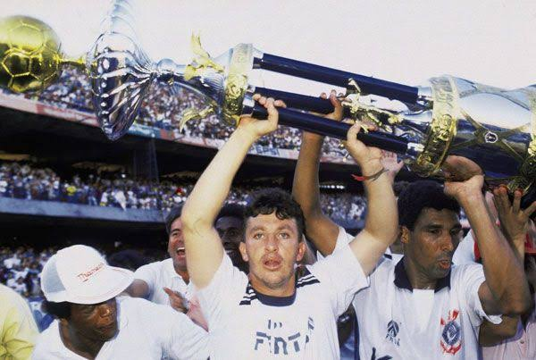
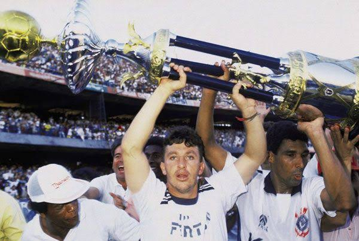
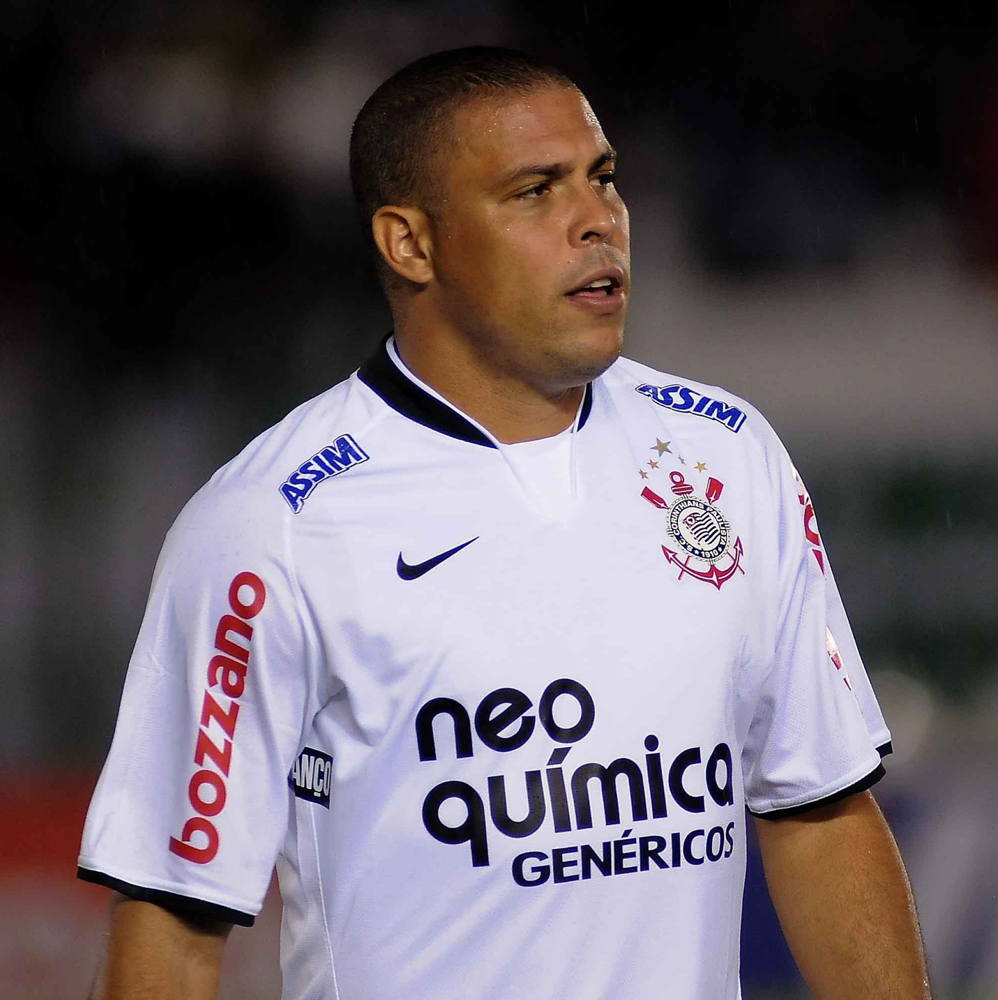

Corinthians
O começo da historia do Corinthians
Fundação 1910

Às 20h30 do dia 1º de setembro, à luz de um lampião, na esquina das ruas José Paulino e Cônego Martins, no bairro do Bom Retiro, o grupo de operários formado por Anselmo Corrêa, Antônio Pereira, Carlos Silva, Joaquim Ambrósio e Raphael Perrone fundaram o Sport Club Corinthians Paulista. Com mais oito rapazes, foi formada a reunião dos primeiros integrantes e sócio-fundadores do Timão, que teve seu nome inspirado na equipe inglesa Corinthian-Casuals Football Club, que fazia excursão pelo Brasil. O presidente escolhido por eles foi o alfaiate Miguel Battaglia, que, já no primeiro momento, afirmou: “O Corinthians vai ser o time do povo e o povo é quem vai fazer o time”. Um terreno alugado na Rua José Paulino foi aplainado, virou campo e foi lá que, já no dia 14 de setembro, o primeiro treino foi realizado diante de uma plateia entusiasmada, que garantiu: “Este veio para ficar!”.
Primeira Partida 1910

A primeira partida oficial da história do Sport Club Corinthians Paulista ocorreu no dia 10 de setembro de 1910, na várzea da LAPA, contra o União Lapa Futebol Clube. A primeira partida oficial da história do Sport Club Corinthians Paulista ocorreu no dia 10 de setembro de 1910, na várzea da
Primeira Escalação da Historia 1910
- Goleiro: Luigi Fabbi
- Zagueiro: Cézar Nunes
- Zagueiro: Jorge Campbell
- Lateral Esquerdo: Jão da Silva
- Lateral Direito: Joaquim ambrosio
- Volante: Alfredo
- Meia Direito: Police
- Meia Esquerdo: Lepre
- Ponta Direita: Atílio
- Ponta Esqurda: Rafael Perrone
- Atacante: Valente
Primeiro Titulo 1914


Primeiro título do Sport Club Corinthians Paulista. Com 10 vitórias em 10 jogos disputados, o Timão marcou 37 gols e venceu a última partida por 3 a 0, contra o Lusitano, no Parque Antártica. O atacante Neco foi o artilheiro do torneio com 12 gols. O Alvinegro conquistou o Campeonato Paulista com uma rodada de antecedência. No dia 08 de novembro, a equipe derrotou o Campos Elyseos por 4 a 0 e sagrou-se campeã com a seguinte escalação:
Escalação do Primeiro Titulo 1914
- Goleiro: Aristides
- Zagueiro: Fúlvio
- Zagueiro: Casemiro González
- lateral Esquerdo: César Nunes
- Lateral Direito: Police
- Volante: Amílcar
- Meio Campista: Bianco
- Meia Esquerdo: Peres
- Ponta Direita: Américo
- Meio Atacante: Apparício
- Atacante: Neco
O Primeiro Estádio PONTE GRANDE 1918

Em suas horas de folga, os jogadores alvinegros construíram o gramado do primeiro estádio oficial corinthiano. Nomeado como Ponte Grande, a casa do Timão ficava onde hoje é a Ponte das Bandeiras, na Marginal Tietê.
Principais Titulos do Corinthians
Campeonatos Nacionais
Campeonato Brasileiro 1990


Foi com mais de 100 mil pessoas presentes no estádio do Morumbi que o Timão faturou o título do Campeonato Brasileiro pela primeira vez. O talismã Tupãzinho marcou aos nove minutos do segundo tempo e garantiu a vitória por 1 a 0 sobre o São Paulo. Naquela tarde de 16 de dezembro, a equipe entrou em campo com Ronaldo, Giba, Marcelo, Guinei e Jacenir; Márcio, Wilson Mano e Tupãzinho; Neto, Fabinho e Mauro.
Fonte
Escalação 1990
- Goleiro: Ronaldo
- Zagueiro: Guinei
- Zagueiro: Marcelo Djian
- lateral Esquerdo: Jacenir
- Lateral Direito: Giba
- Volante: Márcio
- Meio Campista: Bianco
- Meia Esquerdo: Peres
- Meia Atacante: Tupãzinho
- Atacante: Fabinho
- Atacante: Neto
- Técnico: Nelsinho Baptista
Bicampeonato Brasileiro 1998


Naquele ano, o Corinthians tinha um timaço. E não deu outra. Contra o Cruzeiro, o clube empatou as duas primeiras partidas da final e, no Morumbi, fez 2 a 0 com gols de Edílson e Marcelinho, garantindo a taça de bicampeão brasileiro.
Fonte
Escalação 1998
- Goleiro: Dida
- Zagueiro: Fábio Luciano
- Zagueiro: Gamarra
- lateral Esquerdo: Kléber
- Lateral Direito: Índio
- Volante: Rincón
- Meio Campista: Vampeta
- Meia Esquerdo: Ricardinho
- Meia Atacante: Marcelinho
- Atacante: Luizão
- Atacante: Edílson
- Técnico: Vanderlei Luxemburgo
Brasileirão série B 2008

Após o pior momento da história do clube, a queda para a segunda divisão do nacional, o Corinthians conquistou de forma honrosa o título da série B. Foram 85 pontos marcados em 38 jogos, com 25 vitórias, 10 empates e três derrotas. No total, o Alvinegro balançou as redes 79 vezes.
Com seis rodadas de antecedência, o Timão já havia garantido seu retorno para a elite. Aos gritos de “O Coringão voltou!”, a Fiel celebrou a vitória por 2 a 0 sobre o Ceará no Pacaembu e a volta para a série A. Duas partidas depois, o clube do Parque São Jorge já soltava o grito de campeão após derrotar o Criciúma por 2 a 0 em Santa Catarina.
O último duelo foi realizado no Pacaembu, com vitória corinthiana por 3 a 2 sobre o Avaí. Os atacantes Dentinho e Herrera foram os artilheiros da equipe, com 14 gols cada.
Fonte
Escalação 2008
- Goleiro: Júlio César
- Zagueiro: Suárez
- Zagueiro: Chicão
- lateral Esquerdo: Éverton Ribeiro
- Lateral Direito: Alessandro
- Volante: Elias
- Meio Campista: Douglas
- Meia Esquerdo: Héverton
- Meia Atacante: Careca
- Atacante: Acosta
- Atacante: Bebeto
- Técnico: Mano Menezes
Copa do Brasil 1995

Após levar os títulos da Copa São Paulo de Juniores e do Paulistão, o Corinthians, em um ano espetacular, levantou o troféu da Copa do Brasil. A equipe venceu oito das 10 partidas disputadas, inclusive as duas da final.
Fonte
Escalação 1995
- Goleiro: Ronaldo
- Zagueiro: vitor
- Zagueiro: Célio Silva
- lateral Esquerdo: Henrique
- Lateral Direito: silvinho
- Volante: Bernado
- Meio Campista: M. Paulista
- Meia Esquerdo: M. Carioca
- Meia Atacante: Souza
- Atacante: Viola
- Atacante: Fabinho
- Técnico: Eduardo Amorim
Copa do Brasil 2009

Após vencer o Paulistão de forma invicta, o clube do parque São Jorge faturou o título da Copa do Brasil pela terceira vez. A competição de 2009 foi uma das edições mais disputadas de todas. Em dois jogos dificílimos contra o Internacional, o Alvinegro venceu o primeiro por 2 a 0 no Pacaembu, com gols de Jorge Henrique e Ronaldo. A segunda partida terminou empatada em 2 a 2. Jorge Henrique anotou mais um, e o outro foi de André Santos
Fonte
Escalação 2009
- Goleiro: Felipe
- Zagueiro: Chicão
- Zagueiro: willian
- lateral Esquerdo: André Santos
- Lateral Direito: Alessandro
- Volante: Elias
- Meio Campista: Cristian
- Meia Esquerdo: Douglas
- Meia Atacante: Jorge Henrique
- Atacante: Dentinho
- Atacante: Ronaldo Fenomeno
- Técnico: Mano Menesses
Campeonato Paulista 1954

Outra conquista inesquecível do campeonato foi a de 1954. O Paulista daquele ano era muito desejado por todas as equipes por ser comemorativo ao quarto centenário da cidade de São Paulo. O elenco do técnico Oswaldo Brandão levantou a taça após o empate em 1 a 1 contra o Palmeiras, com gol do atacante Luizinho.
Fonte
Escalação 1954
- Goleiro: Gylmar
- Zagueiro: Homero
- Zagueiro: Olavo
- lateral Esquerdo: Idário
- Lateral Direito: Goiano
- Volante: Roberto Balangero
- Meio Campista: Claudio
- Meia Esquerdo: Luizinho
- Meia Atacante: Baltazar
- Atacante: Rafael
- Atacante: Simão
- Técnico: Newton Senra
Campeonato Paulista 2019


Após 80 anos, o Corinthians voltou a ser tricampeão paulista. Em uma decisão emocionante, o Corinthians bateu o São Paulo por 2 a 1, com gols de Avelar e Vagner Love, na Arena Corinthians, e comemorou mais um título ao lado da Fiel Torcida.
Fonte
Escalação 2019
- Goleiro: Cássio
- Zagueiro: Manoel
- Zagueiro: Henrique
- lateral Esquerdo: Danilo Avelar
- Lateral Direito: Fagner
- Volante: Ralf
- Meio Campista: Ramiro
- Meia Esquerdo: Sornoza
- Meia Atacante: Clayson
- Atacante: Wagner Love
- Atacante: Pedrinho
- Técnico: Fabio carile
Campeonatos Internacionais
Muundial De Clubes 2000


Com o título brasileiro de 1998, o Corinthians foi o representante do país-sede no primeiro Campeonato Mundial de Clubes, promovido pela Fifa. O torneio foi disputado nas cidades de São Paulo e do Rio de Janeiro em janeiro de 2000. Na partida inicial, o Timão venceu o Raja Casablanca (MAR) por 2 a 0 com gols de Luizão e Fábio Luciano. Dois dias depois, o Alvinegro empatou em 2 a 2 com o Real Madrid (ESP). Edílson marcou os tentos do duelo, que ainda contou com uma defesa de pênalti de Dida no chute de Anelka.
Fonte
Escalação 2000
- Goleiro: Dida
- Zagueiro: Fábio Luciano
- Zagueiro: Adilson
- lateral Esquerdo: Kléber
- Lateral Direito: Índio
- Volante: Rincón
- Meio Campista: Vampeta
- Meia Esquerdo: Ricardinho
- Meia Atacante: Marcelinho
- Atacante: Luizão
- Atacante: Edílson
- Técnico: Vanderlei Luxemburgo
Mundial de Clubes 2012

Após a conquista inédita e invicta da Libertadores, o Corinthians foi até o Japão disputar o Mundial de Clubes da Fifa no mês de dezembro. A primeira partida, realizada em Toyota, foi contra a equipe egípcia Al Ahly. O atacante Guerrero marcou o gol que garantiu o Alvinegro na final do torneio.
Em um jogo muito equilibrado, Timão e Chelsea se enfrentaram na grande decisão. Mais uma vez, o peruano Guerrero marcou de cabeça e garantiu o título para a Nação Alvinegra em Yokohama.
O goleiro Cássio, com uma atuação espetacular, recebeu o troféu Bola de Ouro da competição.
Fonte
Escalação 2012
- Goleiro: Cássio
- Zagueiro: Chicão
- Zagueiro: Paulo andré
- lateral Esquerdo: Alessandro
- Lateral Direito: Fábio Santos
- Volante: Ralf
- Meio Campista: Danilo
- Meia Esquerdo: Paulinho
- Meia Atacante: Jorge Henrique
- Atacante: Sheik
- Atacante: Guerrero
- Técnico: TiTe
Copa Libertadores 2012

Após o empate em 1 a 1 em Buenos Aires no primeiro jogo da final, o Coringão venceu o Boca Juniors (ARG), no Pacaembu, com dois gols do atacante Emerson no dia 04 de julho e fez o Bando de Loucos soltar o grito de campeão da Libertadores pela primeira vez na história.
Fonte
Escalação 2012
- Goleiro: Cássio
- Zagueiro: Chicão
- Zagueiro: Leonardo Castán
- lateral Esquerdo: Alessandro
- Lateral Direito: Fábio Santos
- Volante: Ralf
- Meio Campista: Danilo
- Meia Esquerdo: Paulinho
- Meia Atacante: Alex
- Atacante: Sheik
- Atacante: Jorge Henrique
- Técnico: TiTe
Recopa Sul Americana 2013

Dando continuidade à sequência de títulos dos meses anteriores, o Corinthians conquistou a Recopa Sul-Americana ao bater o São Paulo nos dois jogos da final. Na primeira partida, no Morumbi, Guerrero e Renato Augusto marcaram e garantiram a vitória por 2 a 1, deixando o Alvinegro a um empate da taça.
Fonte
Escalação 2013
- Goleiro: Cássio
- Zagueiro: Gil
- Zagueiro: Paulo andré
- lateral Esquerdo: Guilherme
- Lateral Direito: Fábio Santos
- Volante: Ralf
- Meio Campista: Danilo
- Meia Esquerdo: Renato Augusto
- Meia Atacante: Romarinho
- Atacante: Sheik
- Atacante: Guerrero
- Técnico: TiTe
Os 6 Maiores Idolos da Historia do Corinthians
Segundo Votação do Ge
Sócrates


Chamado de “Doutor” não só pela forma com que tratava a bola, mas também por ser formado em medicina, Sócrates sempre foi um talento no meio de campo do Corinthians.
Sócrates entra para a história do Corinthians por ter feito a torcida aprender com ele dentro e fora das quatro linhas. De time pressionado pela falta de títulos (tinha acabado de sair da fila quando ele chegou) a um time que sabia esperar e jogava com o cérebro, esperando o momento certo para contra-golpear e com isso conquistar o paulista de 79 e o bi de 82/83 onde ele foi peça fundamental. Fora das quatro linhas ensinou a torcida do Corinthians (e o Brasil) o que era democracia, com a implantação da Democracia Corinthiana onde todos, do presidente ao roupeiro, tinham o mesmo peso nas decisões tomadas pelo clube.
Fonte
Marcelinho Carioca


Sem dúvida alguma um dos maiores ídolos do Corinthians esse carioca que ao chegar no Parque São Jorge disse: "Quero marcar minha passagem aqui. Vim para o Corinthians para ser campeão!".
E foi campeão mesmo. Jogador que mais títulos ganhou com a camisa do Corinthians, Marcelinho sempre foi peça fundamental do elenco Corinthiano. Vendido ao Valência da Espanha em 1997, retornou ao Corinthians após curto período na Europa pra fazer parte daquele time que é considerado por muitos um dos melhores times do Corinthians e, entre outros, levar o Timão ao título mundial, em 2000.
Fonte
Cássio
Desde que chegou ao Corinthians, Cássio conquistou dois títulos do Campeonato Brasileiro, quatro do Campeonato Paulista, um título da CONMEBOL Libertadores, um título da Recopa Sul-Americana e um título da Copa do Mundo de Clubes da FIFA contra o Chelsea em 2012. Cássio conquistou a Bola de Ouro como Melhor Jogador da Copa do Mundo de Clubes da FIFA de 2012 e foi eleito o Jogador Mais Valioso da final. Após a conquista do Campeonato Paulista 2019, tornou-se o jogador com mais títulos da história do clube.[2]
Fonte
Neto
 

Nascido em Santo Antônio de Posse e revelado pelas categorias de base do Guarani chegou ao Corinthians após discretas passagens por outros times da capital paulista e pelo Bangu (RJ). O curioso é que Neto chegou ao Parque São Jorge, vindo do Palmeiras, sendo trocado pelo meia Ribamar.
Um dos maiores jogadores da história do Corinthians, Neto só não teve maior destaque mundial devido ao seu temperamento forte e aos problemas com a balança. Muito marcado pelo seu temperamento, Neto chegou a pegar alguns jogos de suspensão após ter cuspido na cara do juiz José Aparecido de Oliveira num clássico contra o time do parque antártica. Pena que foi amenizada e revertida em multa após alguns jogos. Mas esse fato, sem dúvida alguma, pesou em futuras convocações pra seleção, já que Neto vinha sendo o grande destaque do time do Corinthians no início dos anos 90, marcando muitos gols e sendo destaque do time. Como era um exímio cobrador de faltas e craque com a bola nos pés, Neto foi o principal responsável pelo título brasileiro de 1990, marcando 9 gols naquele campeonato e sendo o líder absoluto da equipe. Injustiçado pelo então técnico da seleção brasileira Sebastião Lazaroni não foi convocado pra copa do mundo daquele ano.
Fonte
Rivelino

Formado no futebol de salão (futsal) e nas categorias de base do Corinthians, foi um dos maiores jogadores da história do futebol mundial.
Rivelino é o ídolo mais injustiçado da história do Corinthians.
Após a decisão do campeonato paulista de 1974, Riva foi considerado o culpado pela derrota e foi negociado com o Fluminense. O mais triste é que no segundo jogo da final Rivelino jogou muito mais para o time do que de costume, ajudando por muitas vezes a defesa. Isso acabou tornando-o presa fácil pra zaga adversária. Fato que causou estranheza em todos e culminou com a sua saída.
Considerado por Maradona o maior jogador de todos os tempos e sendo o maior ídolo do Neto, Rivelino enquanto jogou no Corinthians participou das copas de 1970 (aquela que é considerada a melhor seleção nacional de todos os tempos) e da de 1974. Sendo campeão e quarto colocado, respectivamente. Participou ainda da copa de 1978, mas na maior parte das partidas ficou no banco de reservas.
Autor do drible “elástico” e dono de uma bomba de perna esquerda, o “Reizinho do Parque” teve uma breve passagem como dirigente do Corinthians, mas sem grande sucesso. Mas o que marcou nessa sua passagem foi que em uma entrevista disse que havia voltado ao Corinthians para ser campeão e que se fosse possível trocaria o título de 1970 com a seleção pelo de 1974 pelo Corinthians. Mostrando assim o quanto Rivelino merece ser tratado como ídolo, o quanto que ele gosta do Corinthians e quanto merece ser lembrado e estar pra sempre na história do Timão.
Fonte
Ronaldo Fenomeno

Um dos maiores jogadores da história do futebol mundial com passagens por São Cristovão (RJ), Cruzeiro (MG), PSV (Hol), Barcelona (Esp), Inter de Milão (Ita), Real Madrid (Esp) e Milan (Ita), Ronaldo Fenômeno teve a sua contratação anunciada em 9 de dezembro de 2008, sendo apresentado no Parque São Jorge com grande festa e para milhares de torcedores no dia 12 daquele mesmo mês.
Fora de forma devido a inúmeras lesões e operações, Ronaldo passou os primeiros meses de 2009 fazendo tratamento e recuperando a forma física. Sua estréia foi num jogo pela Copa do Brasil, contra o Itumbiara (MG), entrando no decorrer do segundo tempo. No jogo seguinte, clássico contra o Palmeiras válido pelo Campeonato Paulista, Ronaldo entrou na metade do segundo tempo e as 47 minutos fez, de cabeça, o seu primeiro gol com a camisa do Corinthians. Gol que foi muito comemorado por ele, junto a fiel torcida e que virou notícia no mundo todo. Foi jogador fundamental na conquista do campeonato paulista e da copa do brasil, fazendo gols decisivos nas fases finais, inclusive um que é considerado pelo próprio o mais bonito de sua carreira, no primeiro jogo das finais do Paulistão e que segundo Pelé (que estava na vila belmiro e viu ao vivo), foi "gol de craque, de gênio".
Ronaldo, devido a inúmeras lesões (algumas durante seu tempo no Corinthians) foi ficando cada vez menos em campo e no início de 2011 anunciou a sua aposentadoria do futebol por não suportar mais conviver com as dores e a rotina de atleta profissional. Mesmo fora de campo e aposentado, Ronaldo ainda pode ser visto em alguns jogos no Pacaembu torcendo pelo Corinthians, pois como ele mesmo disse em sua apresentação, "é mais um louco pro bando de loucos". Afinal de contas ele pode ter passado pelos maiores times do mundo, pode ter jogado com craques internacionais. Mas a sensação de vestir o manto sagrado e ver a fiel torcida em festa é algo único!
Fonte